|
4-2-3-1
|
England | 2 | - | 1 | Congo DR |
4-3-3
|
| HT 0-1 | ||||||
|
FIFA World CupWednesday 1 July 2026
|
||||||
- Venue
- Atlanta Stadium
- Attendance
- 68,239
- Referee
- Adham Mohammad Tumah Makhadmeh
Yellow card19'
J. Bellingham
- 2
Substitution61'
N. Madueke
B. Saka
M. Rashford
A. Gordon
Substitution70'
D. Spence
E. Eze
Goal75'
H. Kane
Assist: A. Gordon
Goal86'
H. Kane
Assist: A. Gordon
Substitution90+1'
D. Rice
J. Stones
Whistle45+7'
45+7'
Goal7'
B. Cipenga
Assist: C. Mbemba
Yellow card28'
N. Sadiki
Substitution64'
N. Mbuku
M. Elia
- 2
Substitution76'
B. Cipenga
T. Bongonda
N. Mukau
E. Kayembe
- 2
Substitution89'
A. Masuaku
J. Kayembe
S. Moutoussamy
F. Mayele
England | |
|---|---|
Goalkeeper | |
| 1 | J. Pickford |
Defender | |
| 2 | E. Konsa |
| 3 | N. O'Reilly |
| 6 | M. Guéhi |
| 25 | D. Spence 70' |
Midfielder | |
| 4 | D. Rice 90+1' |
| 8 | E. Anderson |
| 10 | J. Bellingham 19' |
| 11 | M. Rashford 61' |
| 20 | N. Madueke 61' |
Forward | |
| 9 | H. Kane 75'86' |
Substitutes | |
| 5 | J. Stones 90+1' |
| 7 | B. Saka 61' |
| 18 | A. Gordon 61' |
| 21 | E. Eze 70' |
Congo DR | |
Goalkeeper | |
| 1 | L. Mpasi |
Defender | |
| 2 | A. Wan-Bissaka |
| 4 | A. Tuanzebe |
| 22 | C. Mbemba |
| 26 | A. Masuaku 89' |
Midfielder | |
| 6 | N. Mukau 76' |
| 8 | S. Moutoussamy 89' |
| 14 | N. Sadiki 28' |
Forward | |
| 7 | N. Mbuku 64' |
| 9 | B. Cipenga 7'76' |
| 20 | Y. Wissa |
Substitutes | |
| 10 | T. Bongonda 76' |
| 12 | J. Kayembe 89' |
| 13 | M. Elia 64' |
| 19 | F. Mayele 89' |
| 25 | E. Kayembe 76' |


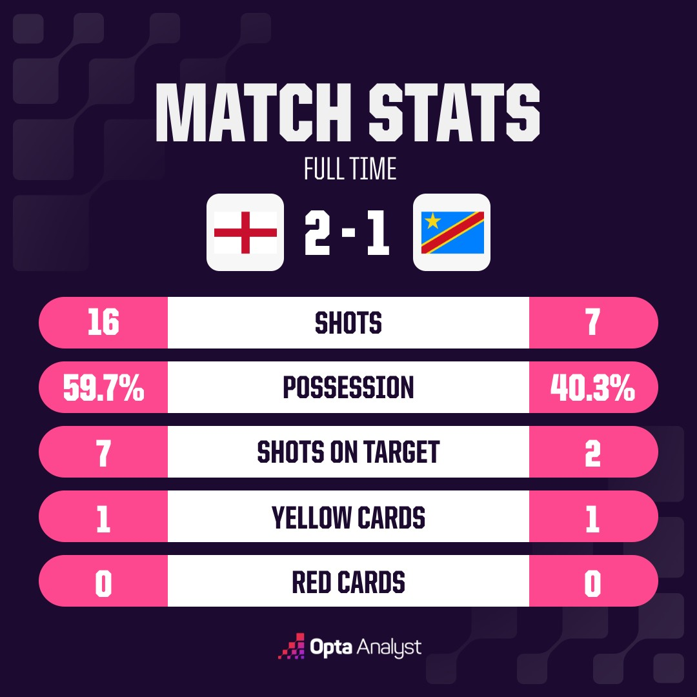
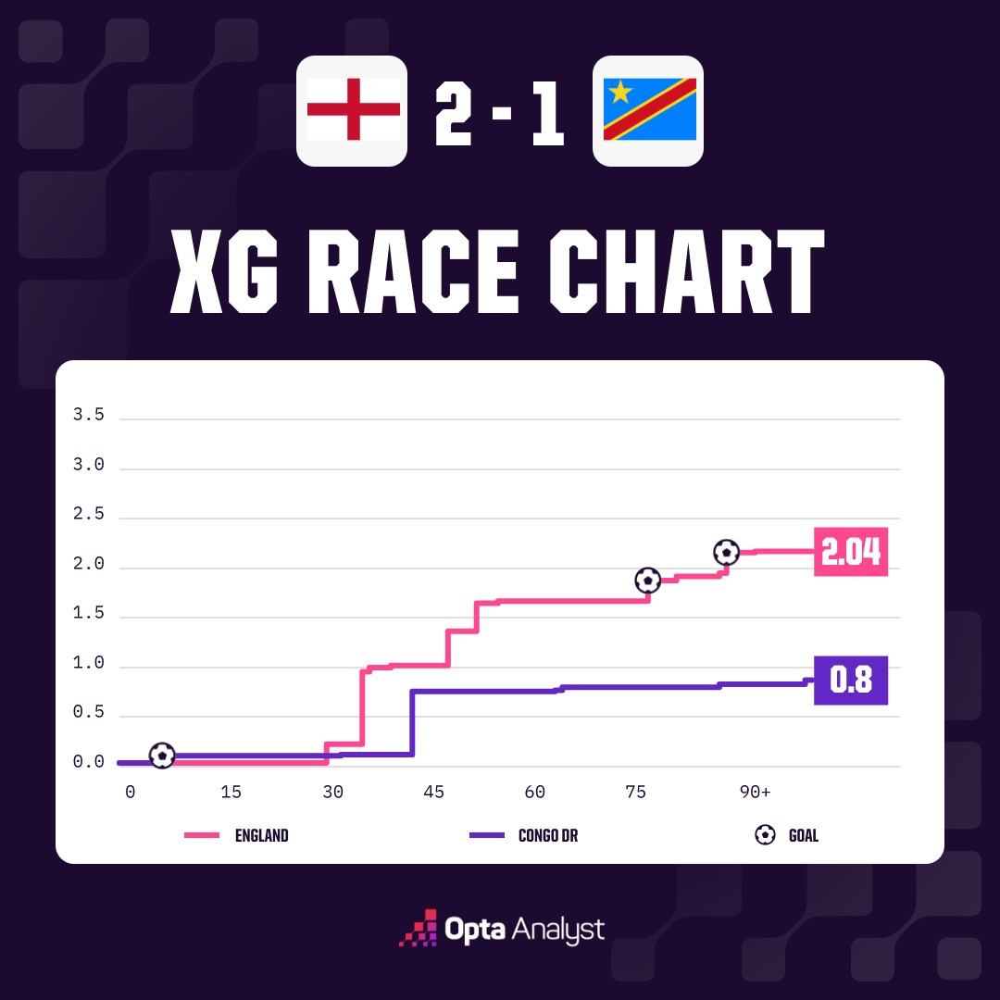
98'
England are undefeated in their last 4 games in the FIFA World Cup, their last joint longest unbeaten streak was from 21st November 2022 to 4th December 2022.
98'
England have won after conceding the opening goal in the FIFA World Cup for the first time since 30th July 1966 against Germany (13 games without a win).
98'
England attempted 16 shots in this game, their lowest total in a single match in the 2026 FIFA World Cup.
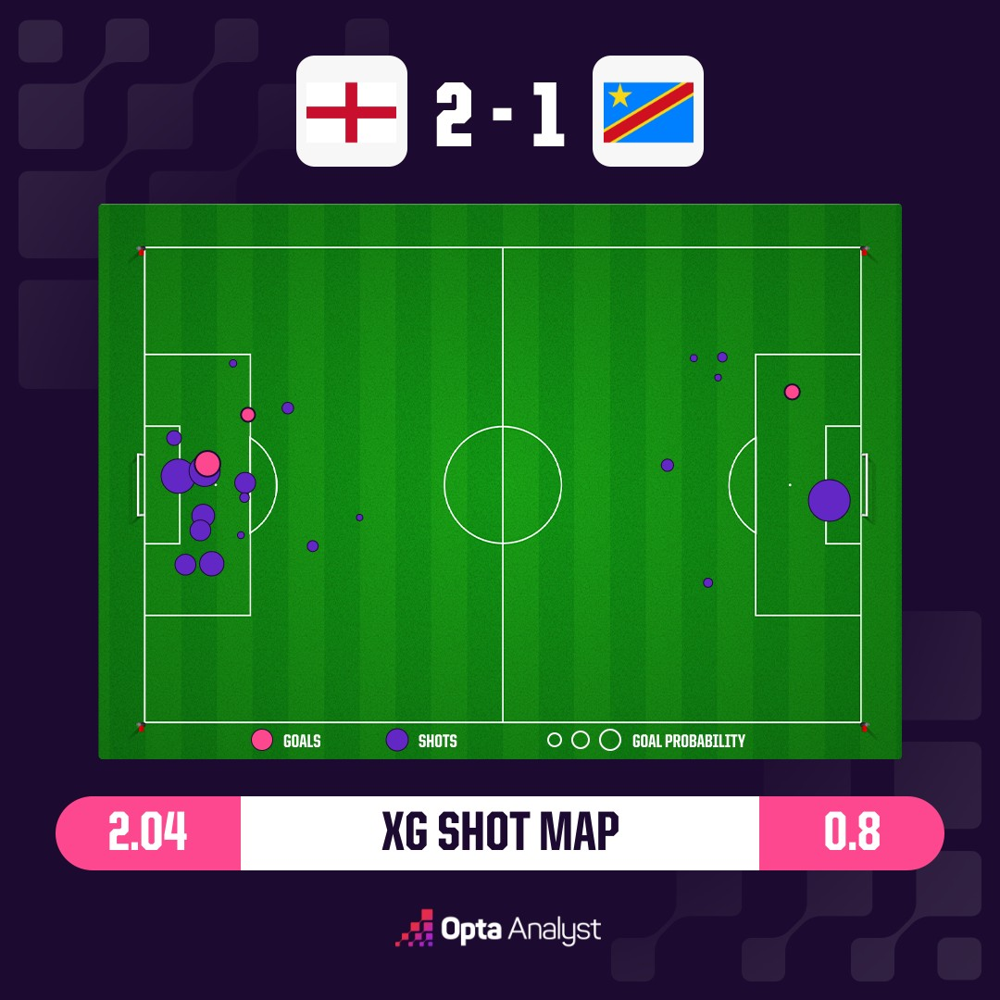
90+7'
IT’S ALL OVER! England have taken the victory, winning 2-1 thanks to goal from Harry Kane. England can celebrate, but Congo DR will have to lick their wounds.
90+7'
A chance goes begging as Yoane Wissa gets off a shot that does not hit the target. They might have done better with that one, but instead it is a goal-kick to England.
90+5'
A free-kick in a dangerous position now for Congo DR, after a foul from Jude Bellingham on Yoane Wissa. Can Congo DR make England pay for that rashness from Jude Bellingham?
90+3'
A free-kick in a dangerous position now for England, after a foul from Axel Tuanzebe on Harry Kane. Can England make Congo DR pay for that rashness from Axel Tuanzebe?
90+2'
Free-kick! A foul from Fiston Mayele on Marc Guéhi. It is well away from Congo DR’s goal, so it is unlikely to result in a chance for England.
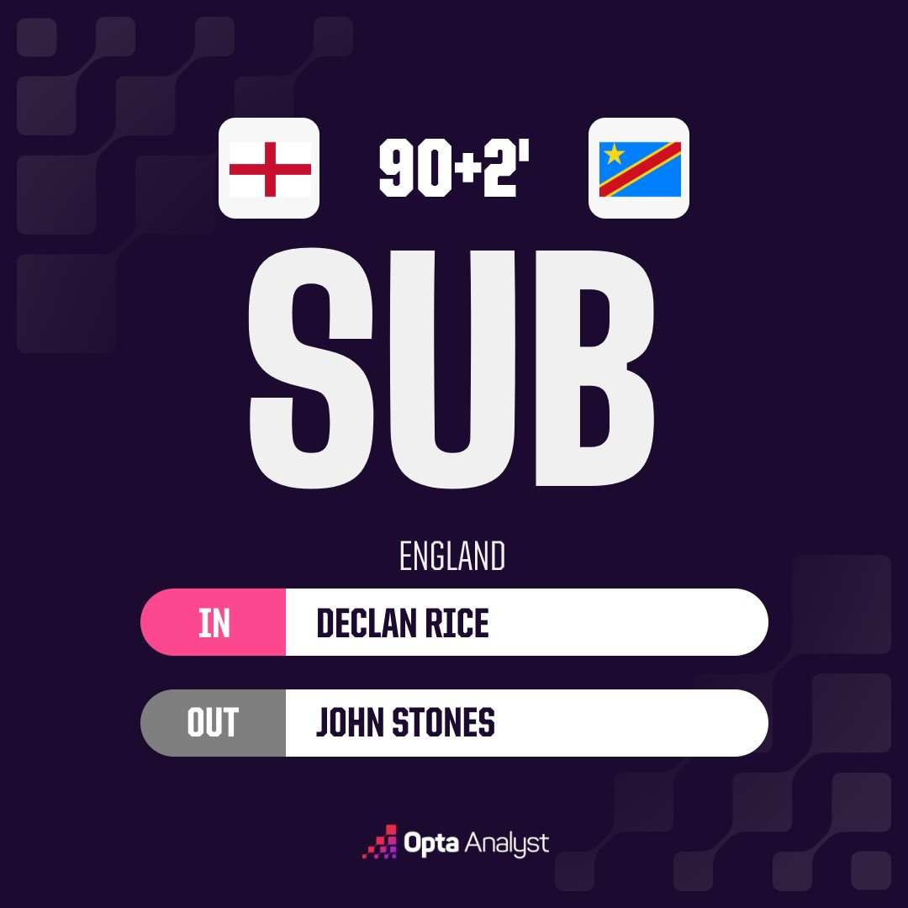
90+1'
A substitution for England sees Declan Rice replaced by John Stones. There does not appear to be any obvious sign of an injury, so that is a tactical switch.
90+1'
Can Congo DR make this chance count? They have won a free-kick in a threatening position after a foul from Anthony Gordon on Théo Bongonda. Will England's defence be tested here?
90+1'
Harry Kane has attempted 5 shots, the first time he has attempted at least 5 shots in a match in the FIFA World Cup since facing Croatia on 17th June 2026 (7 shots).
90+1'
No luck! Harry Kane takes on a shot that, had they got it right, might have been set to test the goalkeeper, but instead it is sent off target and Congo DR come away unscathed.
89'
The Congo DR manager is looking to the substitutes’ bench, bringing on Fiston Mayele in place of Samuel Moutoussamy. Will the change make a difference? Let’s find out!
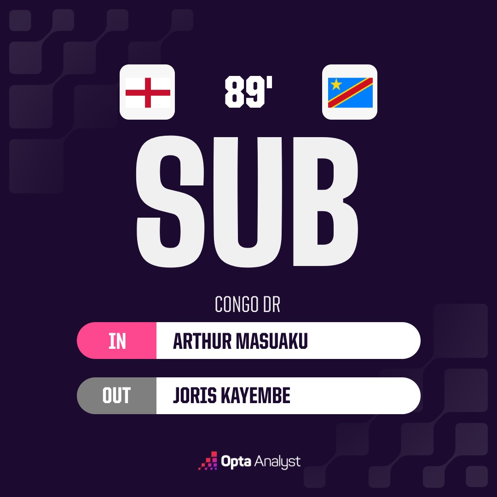
89'
The Congo DR manager is looking to the substitutes’ bench, bringing on Joris Kayembe in place of Arthur Masuaku. Will the change make a difference? Let’s find out!
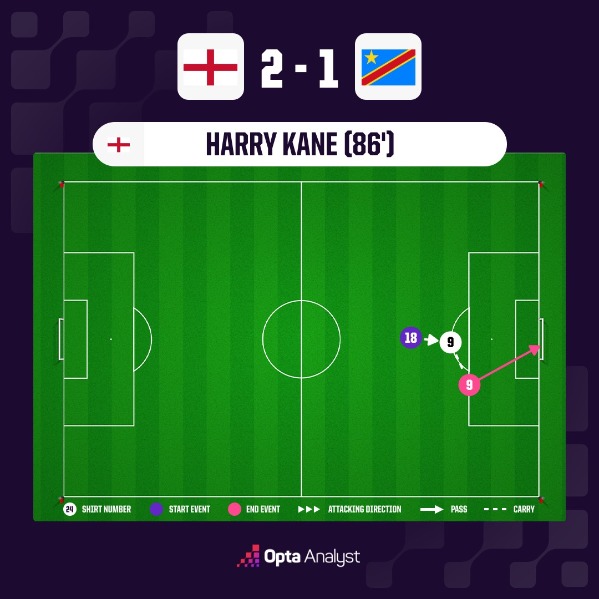
86'
Anthony Gordon has assisted his second goal in the 2026 FIFA World Cup.
86'
Harry Kane has scored his 13th goal in the FIFA World Cup.
86'
GOAL! England have gone ahead late on, with Harry Kane finishing from inside the area. Can they hold on now? They only have the closing stages to get through to come out with the victory.
86'
Lionel Mpasi has made 5 saves, the first time he has made at least 5 saves in a match in the FIFA World Cup since facing Colombia on 24th June 2026 (8 saves).
86'
SAVED! Good work from Lionel Mpasi, who stands firm to deny Jude Bellingham, who managed to get a shot away from inside the Congo DR area.
85'
Meschack Elia goes for goal with a strike from distance, but Jordan Pickford is able to watch it all the way and make the save. A bit of a tester, there.
85'
No luck! Anthony Gordon takes on a shot that, had they got it right, might have been set to test the goalkeeper, but instead it is sent off target and Congo DR come away unscathed.
81'
Meschack Elia goes in on Ezri Konsa and concedes a foul. The free-kick is not in a particularly dangerous area from Congo DR’s viewpoint, though.
79'
That is a disappointing effort from Elliot Anderson, who went for glory but got their attempt wrong, and the shot sailed off target. A frustrating moment for England.
76'
Substitution! Edo Kayembe replaces Ngal'ayel Mukau for Congo DR as the manager shuffles the pack. Can Edo Kayembe make an impression as this match continues?
76'
With 15 minutes of normal time remaining, it is England who have had more of the ball, with 61.00% compared to Congo DR’s 39.00%.
76'
Brian Cipenga’s match is over as Congo DR decide to make a substitution. Théo Bongonda enters the field in what looks like a tactical change.
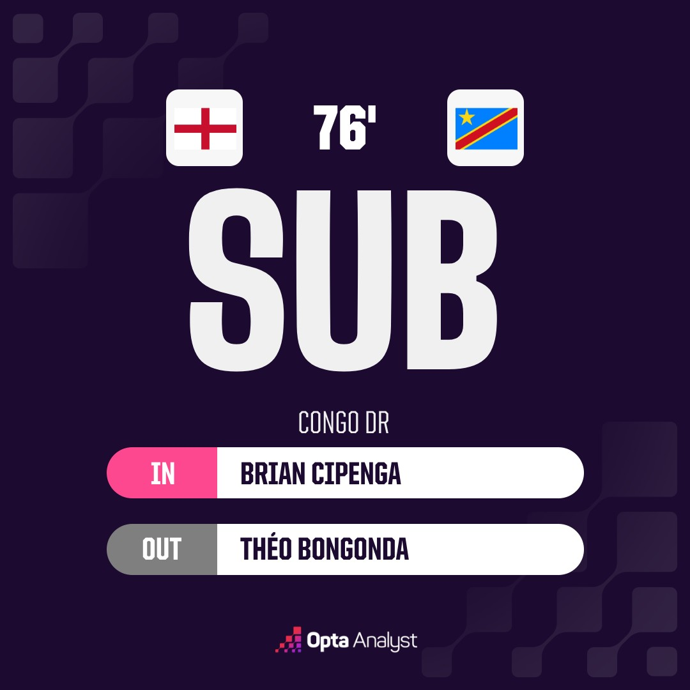
75'
Anthony Gordon has assisted his first goal in the 2026 FIFA World Cup.
75'
GOAL! Harry Kane scores from inside the penalty area and it’s all level between England and Congo DR. All to play for now, can either side go on and find a winner?
75'
Harry Kane has scored his 12th goal in the FIFA World Cup.
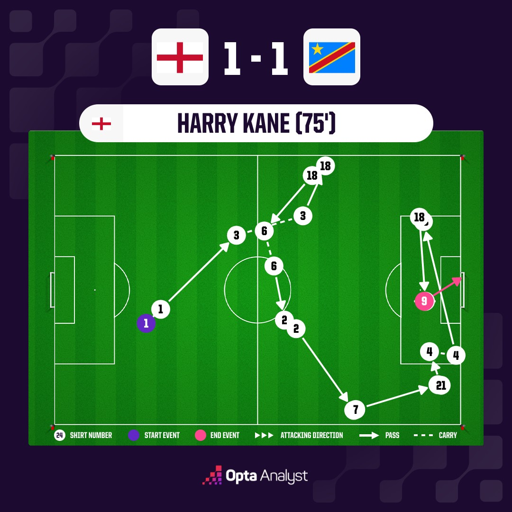
73'
A lull in this match, as the teams prob and probe, but without much success. It has been 10 minutes since there was an attempt from either side, though England are seeing more of the ball, with 91 per cent possession to Congo DR’s 9 per cent during that time.
73'
A free-kick in a dangerous position now for England, after a foul from Brian Cipenga on Eberechi Eze. Can England make Congo DR pay for that rashness from Brian Cipenga?
72'
It is a corner now to England, with Congo DR somewhat hanging on here as they look to hold out for a positive result. Can England make something of this set-piece opportunity?
72'
England have had plenty of the ball in the last 15 minutes, with 65.38% possession compared to just 34.62% for their opponents. However, there has not been any shot to come from that possessional dominance, which will be a huge frustration for their coach.
70'
The England manager is looking to the substitutes’ bench, bringing on Eberechi Eze in place of Djed Spence. Will the change make a difference? Let’s find out!
66'
A free-kick to Congo DR, as Ezri Konsa goes in and fouls Yoane Wissa. However, England will not mind giving one away in this area too much, with plenty of distance to their goal.
66'
With 65 minutes gone, it is England who lead the shot count, with 10 to Congo DR’s 5. England have got 4 of those on target, while Congo DR have managed to get 1 on target.
65'
A rash challenge from Meschack Elia, who sends Nico O'Reilly tumbling, giving England a free-kick. It is not in a threatening position, but it gives them a chance to get back on the ball.
65'
It’s backs to the wall now — Congo DR throwing everything into defending their advantage, with a flurry of crucial interventions.
64'
Substitution! Meschack Elia replaces Nathanaël Mbuku for Congo DR as the manager shuffles the pack. Can Meschack Elia make an impression as this match continues?
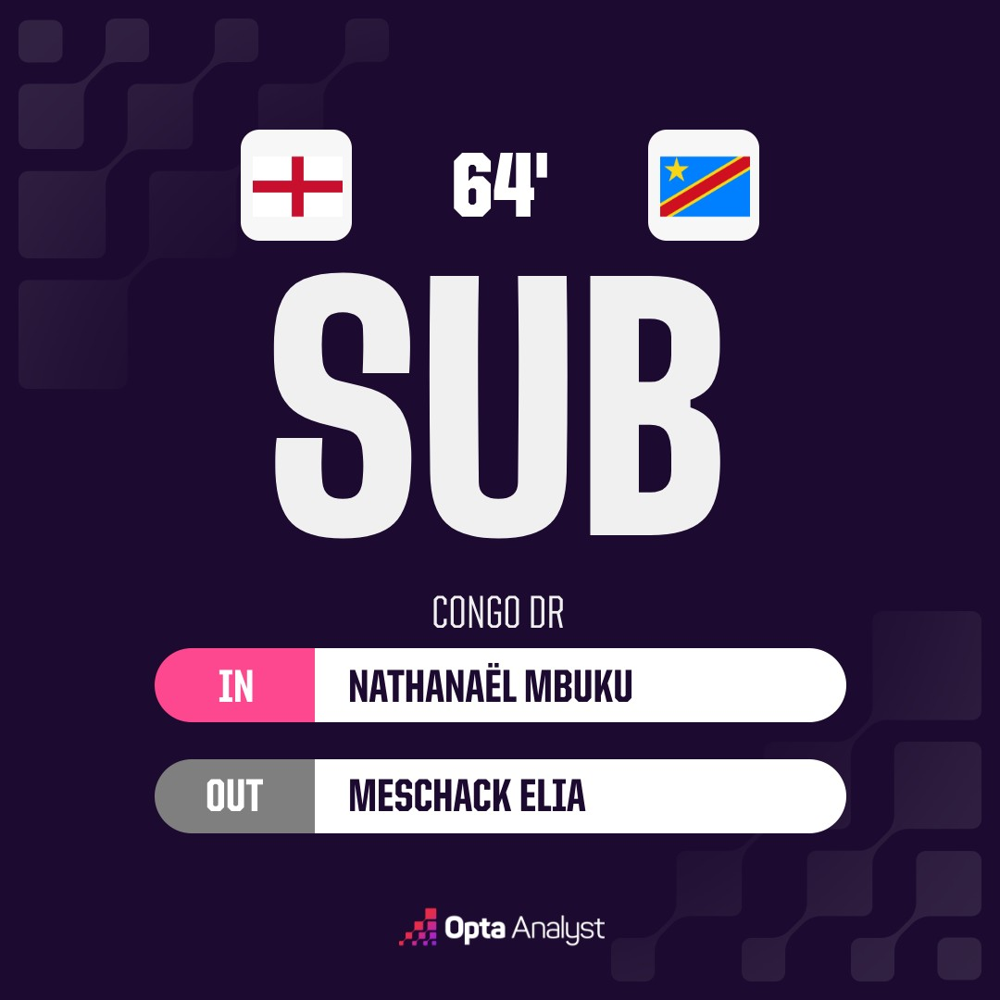
63'
England have a corner to defend now after Elliot Anderson diverts an attempt from Nathanaël Mbuku out of play. Can Congo DR take this chance to get a good delivery in and really test their opponent’s defence?
62'
Great block from Elliot Anderson, as they get in the way of an attempt from Brian Cipenga that might have been set to cause the goalkeeper some problems. Solid defending from the England player.
61'
Marcus Rashford’s match is over as England decide to make a substitution. Anthony Gordon enters the field in what looks like a tactical change.
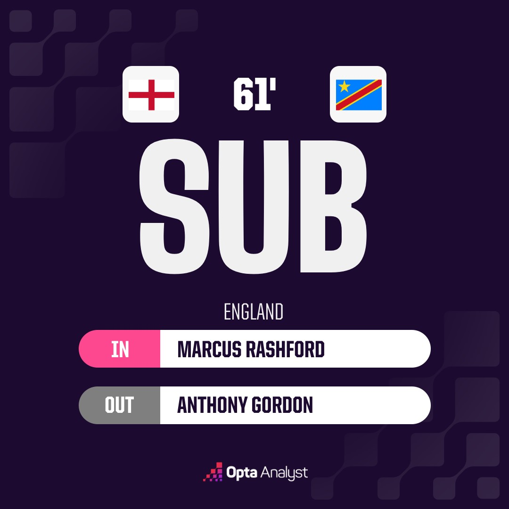
61'
The England manager is looking to the substitutes’ bench, bringing on Bukayo Saka in place of Noni Madueke. Will the change make a difference? Let’s find out!
59'
Despite trailing, England are showing real defensive grit, digging in and stopping further damage as they try to build a platform.
57'
In the last 15 minutes, it is England who have dominated the ball, having seen 65.09% of the possession, yet they have not been able to go and turn that into a goal just yet, with their opponents standing firm.
55'
The England defence steps up in time and there is a frustration for Ngal'ayel Mukau, who thought they were through until the flag goes up to signal offside.
54'
MISS! The score remains 0-1, with Congo DR relieved after England’s Marcus Rashford goes for goal but sends their attempt off target. Not one to write home about, that one.
51'
MISS! How has that not gone in? A complete lack of composure shown from Marcus Rashford, who squanders a golden chance for England, whose coach looks on frustrated from the touchline. A real let off for Congo DR!
50'
Corner! The ball goes behind and now England will aim to deliver a good ball into the penalty area and test that Congo DR defence, which has been frustrating them in recent minutes.
46'
Samuel Moutoussamy goes in on Harry Kane and concedes a foul. The free-kick is not in a particularly dangerous area from Congo DR’s viewpoint, though.
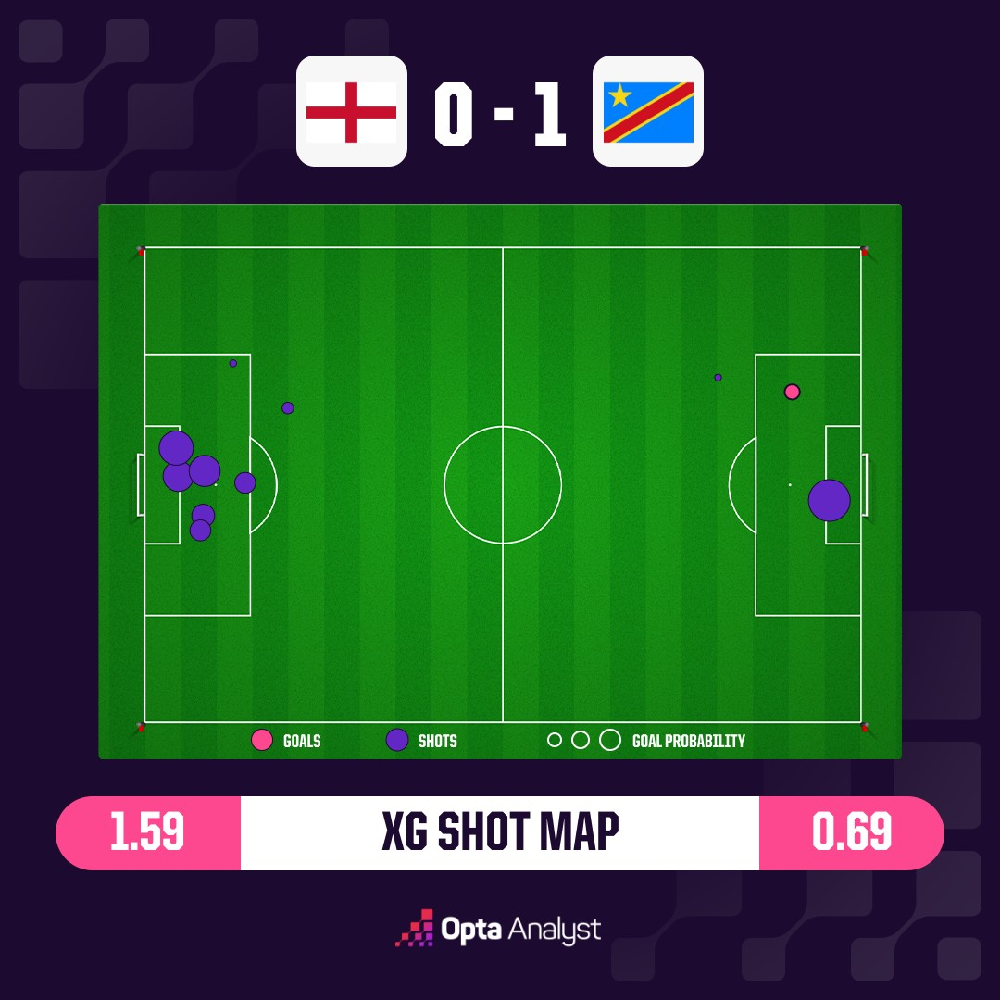
45+7'
HALF-TIME: England 0-1 Congo DR. An intriguing first half comes to a close with Congo DR going in ahead at the interval here at Atlanta Stadium.
45+6'
Excellent defensive work from Congo DR; their organization and success in key duels are effectively safeguarding their lead.
45+6'
What a miss! That was a huge chance for Harry Kane, but they have failed to convert. What an opportunity that was for England.
45+5'
Samuel Moutoussamy goes in on Elliot Anderson and concedes a foul. The free-kick is not in a particularly dangerous area from Congo DR’s viewpoint, though.
45+5'
Offside! Brian Cipenga thought they were through on goal, but the England defence stepped up in time to catch them offside, and the assistant referee puts their flag up.
45+3'
A rash challenge from Ngal'ayel Mukau, who sends Djed Spence tumbling, giving England a free-kick. It is not in a threatening position, but it gives them a chance to get back on the ball.
45+2'
MISSED! That is really poor from Jude Bellingham, who fails to convert from a golden opportunity, with the goal gaping. Will England pay for their profligacy, or can they put that miss behind them?
42'
MISS! Yoane Wissa fluffs their lines, and will Congo DR be made to pay for that miss? England could have been down and out if that attempt had gone in, but at least they have not fallen even further behind in this contest.
41'
A foul from Ngal'ayel Mukau on Jude Bellingham sees England win a free-kick, but it is not in a dangerous position, so Congo DR should be confident they can defend it easily enough.
40'
Despite trailing, England are showing real defensive grit, digging in and stopping further damage as they try to build a platform.
39'
That might have been going in! A fantastic block from Arthur Masuaku, who gets in the way of a goal-bound effort from Noni Madueke. Would the goalkeeper have been beaten? We will never know.
38'
Good play from Marcus Rashford, who draws a foul from Ngal'ayel Mukau to hand England a free-kick in a dangerous position. Will they create something from this set-piece?
38'
Offside! Aaron Wan-Bissaka thought they were through on goal, but the England defence stepped up in time to catch them offside, and the assistant referee puts their flag up.
37'
Nico O'Reilly goes in on Ngal'ayel Mukau and concedes a foul. The free-kick is not in a particularly dangerous area from England’s viewpoint, though.
36'
That might have been going in! A fantastic block from Noah Sadiki, who gets in the way of a goal-bound effort from Noni Madueke. Would the goalkeeper have been beaten? We will never know.
35'
MISSED! That is really poor from Marcus Rashford, who fails to convert from a golden opportunity, with the goal gaping. Will England pay for their profligacy, or can they put that miss behind them?
35'
MISSED! That is really poor from Nico O'Reilly, who fails to convert from a golden opportunity, with the goal gaping. Will England pay for their profligacy, or can they put that miss behind them?
35'
BLOCKED! That was close. Harry Kane got off a shot, which was heading in, but Axel Tuanzebe was on hand to make a vital intervention. Great block!
34'
A rash challenge from Nico O'Reilly, who sends Nathanaël Mbuku tumbling, giving Congo DR a free-kick. It is not in a threatening position, but it gives them a chance to get back on the ball.
34'
Excellent defensive work from Congo DR; their organization and success in key duels are effectively safeguarding their lead.
32'
No luck! Brian Cipenga takes on a shot that, had they got it right, might have been set to test the goalkeeper, but instead it is sent off target and England come away unscathed.
30'
England have had plenty of the ball in the last 15 minutes, with 65.60% possession compared to just 34.40% for their opponents. However, there’s not been any goal to come from that possessional dominance just yet.
30'
HUGE CHANCE GOES BEGGING! What a miss that is from Jude Bellingham, who looked all set to score a goal that their team need, but instead fails to direct their attempt into the back of the net. That was a big, big opportunity for England.
28'
Not much goalmouth action to speak of in this period of the game, with no attempts made from either side. This game could spark at any moment, however. It is England who have had more of the ball, controlling 59 per cent possession in the last 10 minutes.
28'
That is a booking for Noah Sadiki, who has received their first yellow card. They are not happy with the decision, but it is done now, and they will have to be careful for the rest of this game.
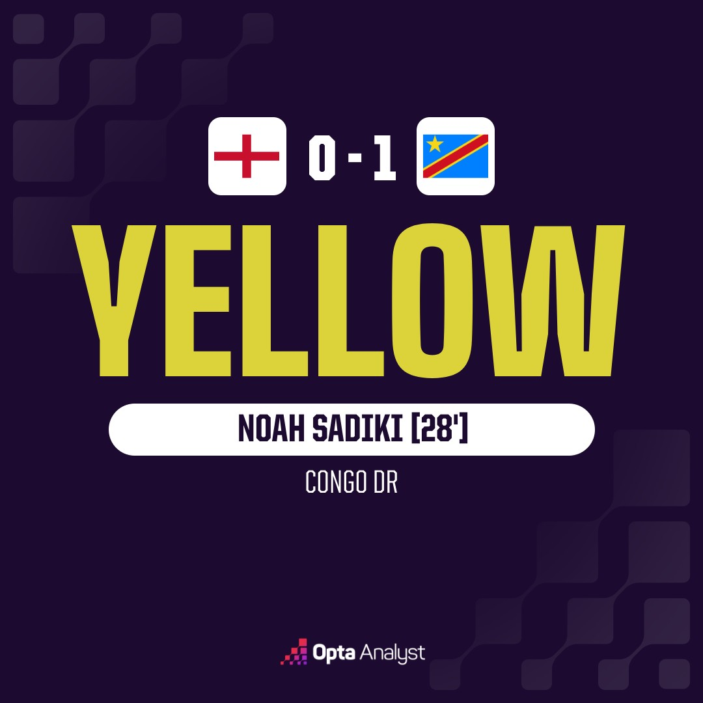
27'
A free-kick in a dangerous position now for England, after a foul from Noah Sadiki on Djed Spence. Can England make Congo DR pay for that rashness from Noah Sadiki?
22'
In the last 15 minutes, it is England who have dominated the ball, having seen 71.64% of the possession, yet they have not been able to go and turn that into a single shot, so there is no imminent sign of a goal.
21'
A rash challenge from Marcus Rashford, who sends Aaron Wan-Bissaka tumbling, giving Congo DR a free-kick. It is not in a threatening position, but it gives them a chance to get back on the ball.
19'
A yellow card for England's Jude Bellingham. They will have to walk a tightrope for the rest of this match, and Congo DR will likely look to target them and draw a second bookable offence.
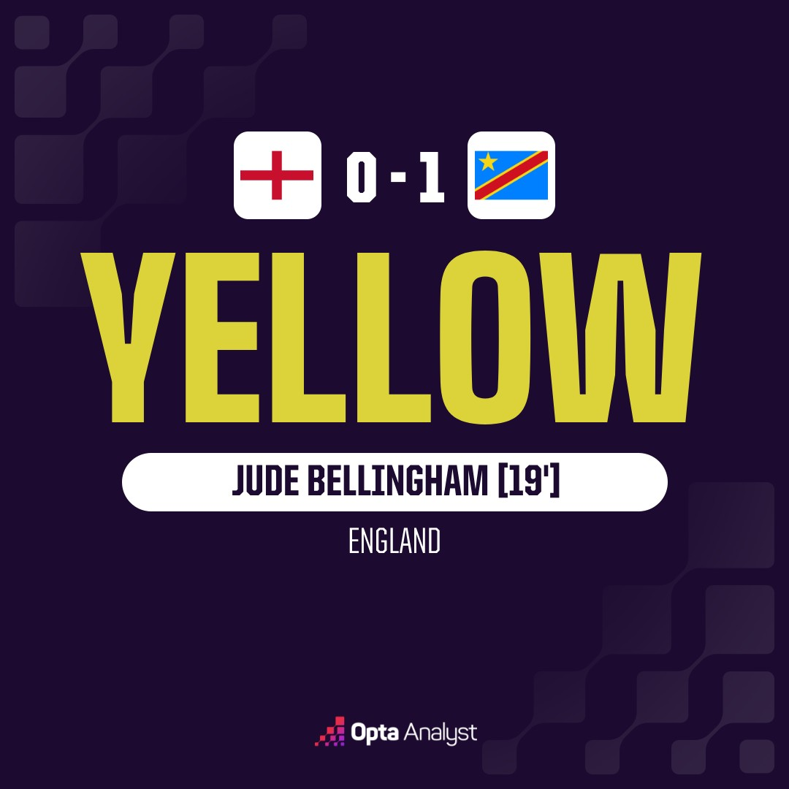
19'
A free-kick to Congo DR, as Jude Bellingham goes in and fouls Nathanaël Mbuku. However, England will not mind giving one away in this area too much, with plenty of distance to their goal.
17'
Neither team has had a shot in the past 10 minutes, as this match just enters something of a down period. England have seen more of the ball, with 82 per cent possession, but Congo DR are keeping them away from goal. There is still a chance the match will spark into life, though.
17'
A rash challenge from Noni Madueke, who sends Brian Cipenga tumbling, giving Congo DR a free-kick. It is not in a threatening position, but it gives them a chance to get back on the ball.
14'
Corner! England are pushing for a goal and now they have an opportunity from this set-piece.
12'
Despite the early setback, England are beginning to find some rhythm. Can they turn this possession into pressure?
11'
Brian Cipenga goes in on Noni Madueke and concedes a foul. The free-kick is not in a particularly dangerous area from Congo DR’s viewpoint, though.
10'
A rash challenge from Nico O'Reilly, who sends Nathanaël Mbuku tumbling, giving Congo DR a free-kick. It is not in a threatening position, but it gives them a chance to get back on the ball.
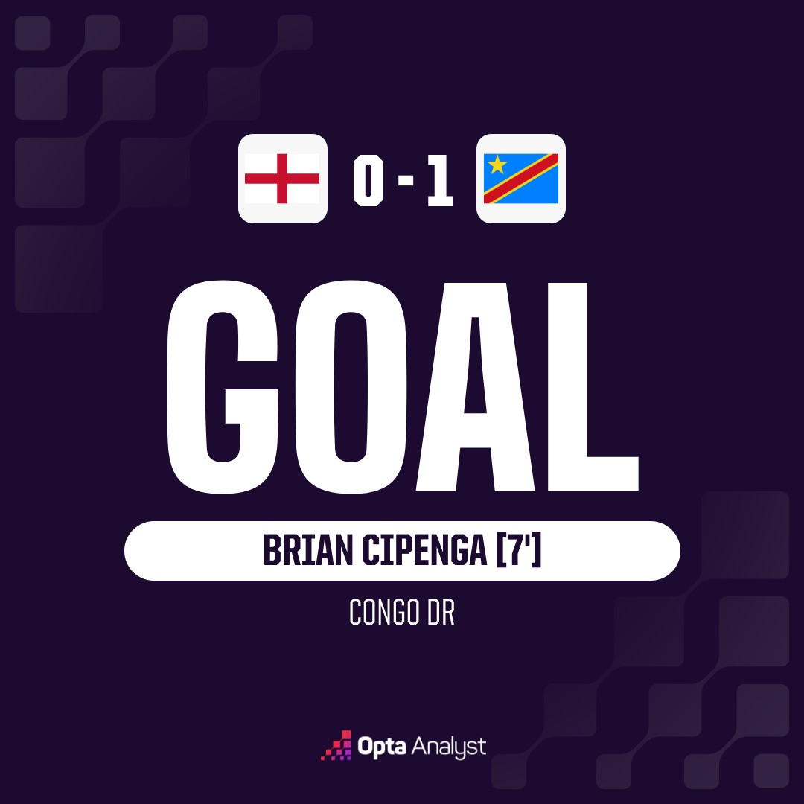
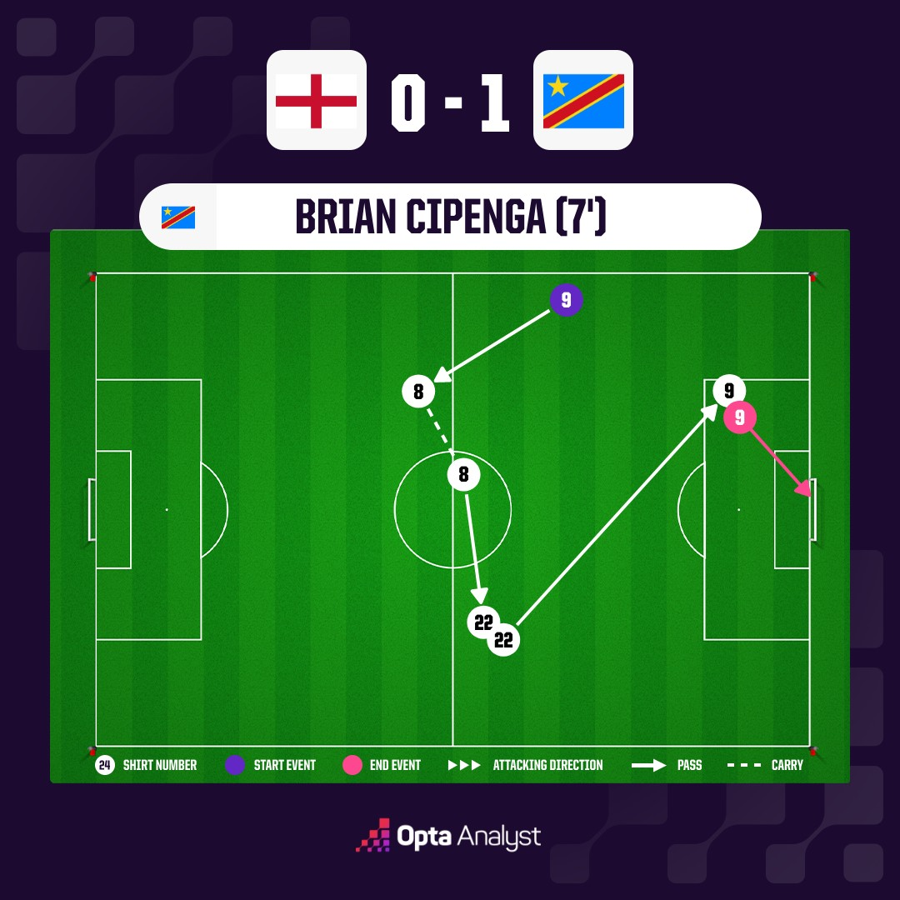
7'
Chancel Mbemba has assisted his first goal in the 2026 FIFA World Cup.
7'
GOAL! Congo DR are ahead early on! Brian Cipenga applies the finish from inside the box and opens the scoring. What a start for Congo DR, who lead 1-0.
7'
Brian Cipenga has scored his first goal in the 2026 FIFA World Cup.
3'
A rash challenge from Marcus Rashford, who sends Ngal'ayel Mukau tumbling, giving Congo DR a free-kick. It is not in a threatening position, but it gives them a chance to get back on the ball.
2'
That’s offside! A switched-on defensive line from England, as they step up at the right time to catch Yoane Wissa offside, and the assistant referee’s flag is up.
1'
KICK-OFF! And here we go! We are up and running in this clash between England and Congo DR at Atlanta Stadium. Stay tuned for all the action as it happens!
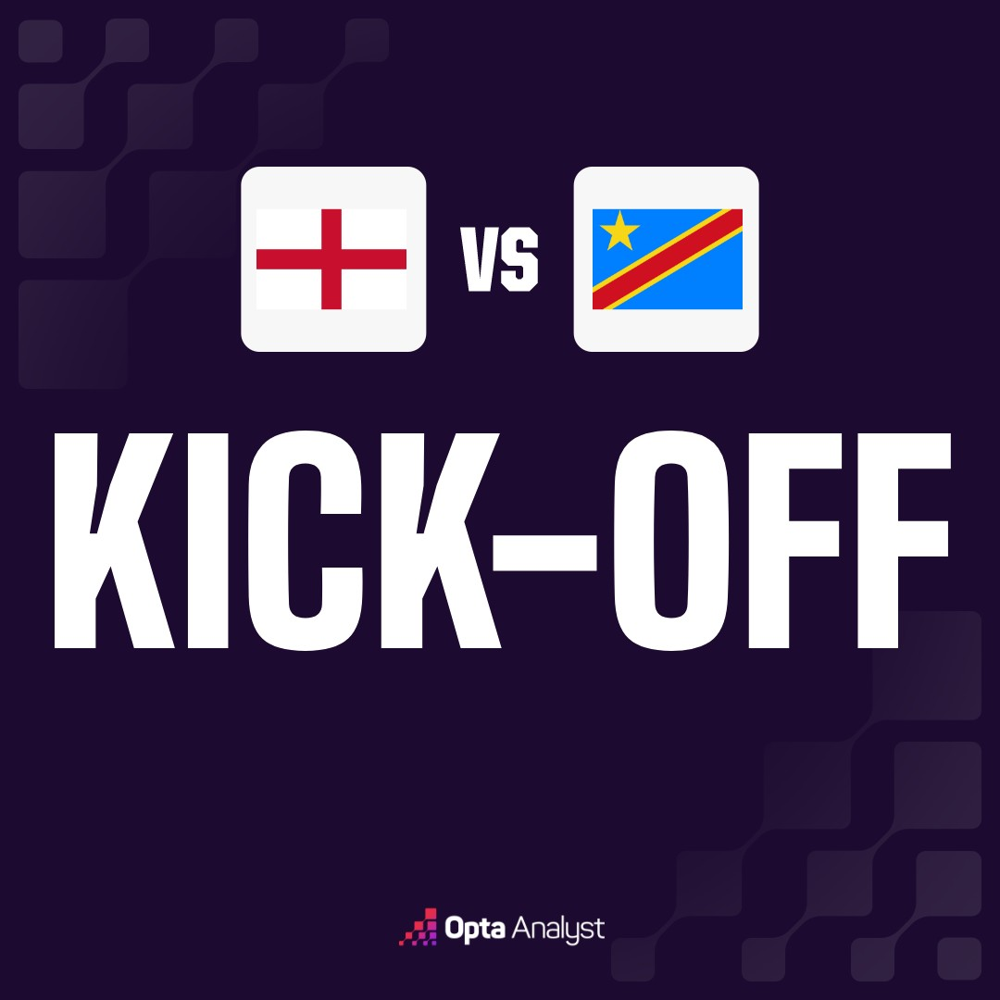
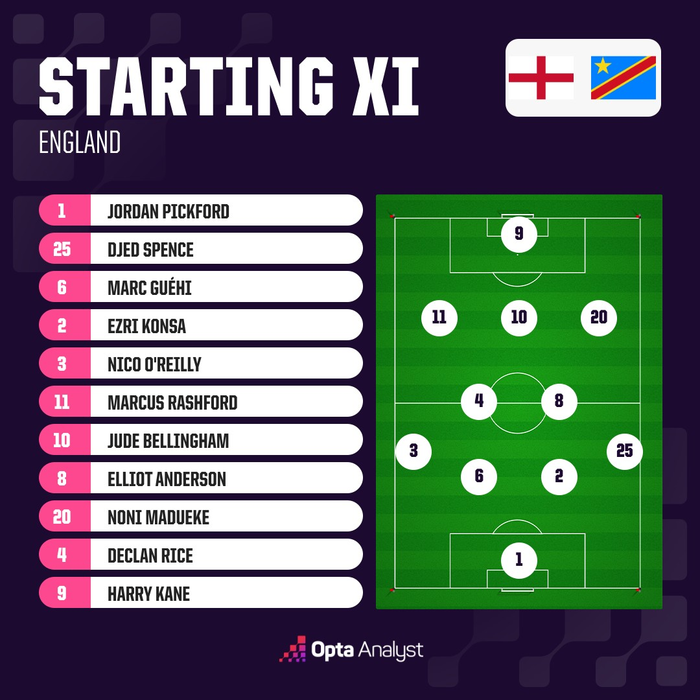
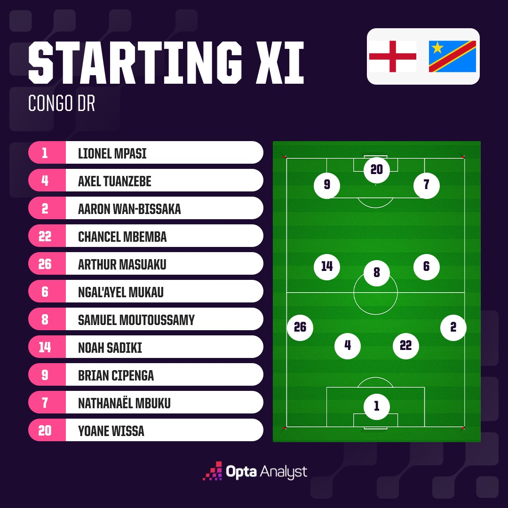
Jordan Pickford is making his 16th appearance in the FIFA World Cup.
Marcus Rashford is making his 15th appearance in the FIFA World Cup.
Harry Kane is making his 15th appearance in the FIFA World Cup.
England have won their last 3 games when H. Kane has scored
England take on Congo DR on Wednesday for a FIFA World Cup Round of 32 clash at Atlanta Stadium.
England earned a 2-0 victory over Panama in their last group stage match on June 27. Jude Bellingham and Harry Kane were on the scoresheet in the win. They are unbeaten in their last five games in all competitions. In seven games this year, they have four wins, two draws, and one loss.
Congo DR earned a first win in the competition this year with a 3-1 victory over Uzbekistan in their last group stage game, a June 27 clash at Atlanta Stadium. Yoane Wissa netted a brace to lead the scoring. In 2026, they have won three, drawn two, and lost three.
England finished first in their group on seven points, while Congo DR's four points placed them third.
Kane has caught the eye for England in World Cup play. He leads the team with three goals, one of those having been the crucial first of the match. Wissa has been the most prolific player for Congo DR, scoring on three occasions in this World Cup campaign.
The English side have been impressive in defence in recent World Cup play, as they have shut out opponents over their last 220 minutes of play this season, dating to a Petar Musa finish in their group stage win against Croatia
In their last six matches in all competitions, England have won four, drawn one and lost one. The English side scored 10 and conceded three over that period, scoring first in four of the six contests. They had four first-half goals, while their opponents netted three times in the first 45 minutes. The Congo DR side have won two, drawn two and lost two in their last six. The Congo DR side scored six and conceded five over that period, netting first in one of the six. They had only one goal in the first half, while their opponents netted two times before the break.
-
General
Possession 59.7% 59.66240.33840.3% Possession lost in defensive half 20 203737 Possession lost in middle third 29 294747 Duels 94 949292 Duels success rate 46.8% 46.80948.91348.9% Aerial duels 23 232323 Aerial duels won 60.9% 60.8739.1339.1% Successful dribbles 7 766 Fouls won 12 121010 Offsides 0 044 Corner awarded 5 533 -
Distribution
Passes 517 517365365 Long passes 33 334646 Long passes proportion (%) 6.4% 6.38312.60312.6% Passing accuracy 90.5% 90.52281.91881.9% Passes in opponents' half 361 361172172 Passing accuracy in opponents' half (%) 88.1% 88.08971.51271.5% Total passes in the final third 200 2008787 Passing accuracy in final third (%) 84.5% 84.566.66766.7% Forward passes 322 322232232 Forward passes (%) 62.3% 62.28263.56263.6% Through balls 4 400 Final third entries 77 774949 Penalty area entries 49 491717 Total open play crosses 35 351010 Crosses 43 431313 Crossing accuracy 20.9% 20.937.6927.7% -
Attack
Goals 2 211 Shots 16 1677 Shots on target 7 722 Blocked shots 3 322 Headed shots 5 500 Shots outside the box 3 355 Shots inside the box 13 1322 Shots accuracy excluding blocked shots 53.8% 53.8464040.0% Shooting accuracy 43.8% 43.7528.57128.6% Key Passes 14 1444 -
Defence
Tackles 11 112020 Tackles success rate 54.5% 54.5454040.0% Clearances 23 233636 Interceptions 7 733 Recoveries 44 443535 Attacking third recovery 5 511 Defensive third recovery 24 242626 Midfield third recovery 15 1588 Recoveries in attacking half (%) 11.4% 11.3642.8572.9% -
Discipline
Fouls conceded 10 101212 Yellow cards 1 111 Red cards 0 000